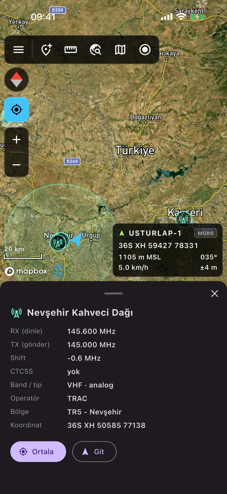
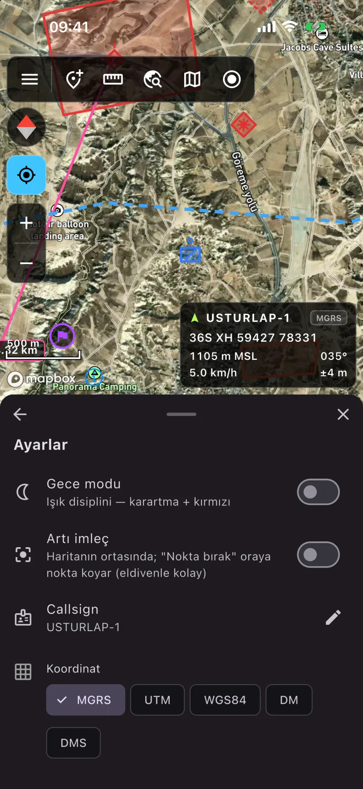

Cuma 20.30 · Evde · İnternet var
Akşam: hazırlık
Elif bilir ki Kapadokya'nın vadilerinde telefon çoğu zaman çekmez. Bu yüzden ilk iş, arama bölgesinin haritasını telefona indirmektir. Haritayı Göreme, Uçhisar ve Çavuşin'i kapsayacak şekilde çerçeveler, uydu ve topografik haritayı birlikte seçer.
Çevrimdışı bölge indirme
≡ → Harita → Çevrimdışı bölgeler → Yeni bölge indir
- Haritayı kaydırıp yakınlaştırarak alanı sarı çerçevenin içine alın.
- Harita türünden Uydu ve Topografik'i seçin; Detayda "Arazi (z16)" çoğu iş için yeter.
- Tahmini boyutu kontrol edip İndir'e dokunun. İndirilen bölge çevrimdışı açılır (çevrimdışı bölge).
Ardından arazinin yükseklik verisini yükler; ertesi gün nereden nereyi görebileceklerini ve hangi yamacın dik olduğunu hesaplamak için buna ihtiyacı olacak.
Yükseklik verisi
≡ → Harita → Yükseklik verisi → Dosya içe aktar
Bölgenin HGT ya da DTED dosyasını seçin (Kapadokya için N38E034). Görüş alanı, eğim, eş yükselti ve yükseklik profili bu veriyle, çevrimdışı hesaplanır.
Vadilerde telsiz de zorlanabilir. Elif en yakın telsiz rölesini bulur: Uçhisar'ın batısında, Nevşehir Kahveci Dağı'nda bir VHF rölesi var. Frekanslarını not edip telsizine girer.
Telsiz röleleri
≡ → Sistem → Ayarlar → Telsiz röleleri (aç) → Band: VHF
Sonra arama planını haritaya döker. Ekibin izleyeceği rotayı (DEVRİYE) Göreme'den kuzeydoğuya doğru noktalarla çizer. Vadideki kayalık, tehlikeli yamacı da bir alan olarak çizip YASAK BÖLGE adını verir ve bir geofence kurar: biri farkında olmadan oraya girerse telefon uyaracak.
Rota planlama
≡ → Navigasyon → Rotalar → Yeni rota planla
Haritada rota noktalarına sırayla dokunun, bitince kaydedin. Rotanın menüsünden noktalara ad verebilir (KN1, KN2…), yükseklik profilini görebilir, dönüş için ters çevirebilirsiniz.
Alan çizmek ve geofence kurmak
≡ → Veri → Çizim araçları → Alan
- Alanın köşelerine dokunun, bitirip ad verin.
- Çizime dokunun → Geofence → "Girişte" uyarısını seçin.
- Uygulama arka plandayken de uyarsın istiyorsanız ≡ → Veri → Geofence → Arka planda da izle.
Son olarak ayarlara bakar: koordinat biçimi MGRS, kuzey "manyetik" (el pusulasıyla aynı değerleri görmek için), düşük pil uyarısı açık. Planı Murat'ın telefonuna da gönderir.
Planı paylaşmak
≡ → Veri → Dışa aktar
Ekipte Usturlap ya da TAK uyumlu bir uygulama varsa Veri paketi, Google Earth için KMZ, GPS cihazları için GPX seçin. Usturlap'tan Usturlap'a giden dosyada daire, halka ve rota gibi ayrıntılar kaybolmaz.


